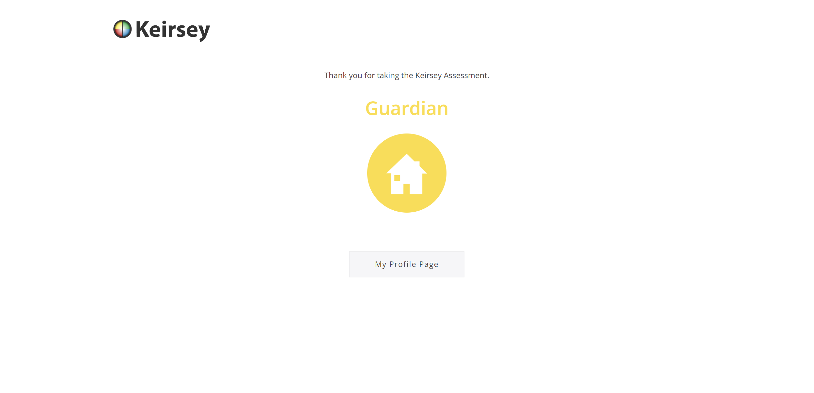

My strongest trait
I would say my strongest trait is my ability to keep pushing forword despite whatever obsticles
may show up. That mindset has helped me to strive for excelence in my academic life even if I dont think
I'm smart enough to make it. It helped me during my CXC's and CAPE's and it has been helping me through
university thus far. My hobby of playing chess has also aided my in my academic life by helping me develop
a more stratigic mindset in how I work towards my goals.
My hero
This is Asta. He is my hero because he is the one that helped me to develop my mindset of never giving up. He is born without magic in a world run by magic si he was rediculed all his life, but he never gave up and worked hard so that he could become the strongest in his series. "My magic is never giving up"
My keirsey

My Thoughts:
I dont think these personality test's have alot of validity to them in general because
people are complex and one general title or assesment of them wont give a wide enough view
into how they are as a person. And the same applies in my case with keirsey. Altho I do agree that
I see myself as a gaurdian to people I care about, that does not completely describe who I am as an indivitual.